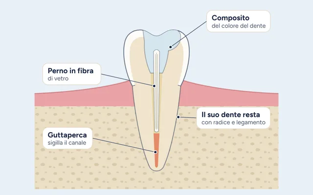

Il sorriso della tua famiglia, curato come il nostro.
Alfredo, Roberto e Aurora Colombo: tre dentisti della stessa famiglia, in un solo studio nel cuore di Patti.
Cosa ti serve oggi?
Scegli la situazione più vicina alla tua: ti mostriamo il trattamento giusto da cui partire e le schede da leggere.
Un controllo e una pulizia
Una visita di controllo e una seduta di igiene professionale sono il modo più semplice per tenere sotto controllo denti e gengive, prima che ci sia un dolore.
Dolore, gonfiore o trauma
Se un dente fa molto male, la gengiva è gonfia o hai preso una botta, non aspettare: chiamaci.

Cura canalareCon un dente caduto del tutto, conservalo in un contenitore con latte o saliva e portalo con te. Fuori orario, rivolgiti al pronto soccorso. Se il gonfiore si estende a viso o collo, o fai fatica a respirare o a deglutire, chiama subito il 112.
Sostituire uno o più denti
Impianto, ponte e protesi mobile sono tre strade diverse. Dopo la visita ti spieghiamo vantaggi e limiti di ciascuna nel tuo caso.
Estetica e allineamento
Sbiancamento, faccette o apparecchio: prima di scegliere guardiamo la salute di denti e gengive, poi ti mostriamo cosa è possibile fare.
Gengive che sanguinano
Il sanguinamento è spesso il primo segnale di un’infiammazione. Controllarla presto è molto più semplice che curarla tardi.
Carie e denti rovinati
Dalla piccola otturazione alla cura canalare, fino alle corone su misura: si sceglie la soluzione che conserva più dente sano possibile.
La visita dei più piccoli
La prima visita non deve aspettare il primo mal di denti. In studio il punto di riferimento per i bambini è Aurora Colombo.
Tutto quello che serve ai tuoi denti, in un solo studio
Dalla prevenzione alla chirurgia, dai bambini agli adulti. Scegli un trattamento per leggere come lavoriamo.
Prevenzione e cura di base
Le visite più frequenti, alla base di ogni percorso.
Gengive e chirurgia
Quando serve intervenire più a fondo.
Impianti e protesi
Per sostituire uno o più denti mancanti.
Allineamento e funzione
Occlusione, articolazione e postura dei denti.
Estetica e bambini
Il sorriso che si vede, a ogni età.
Tecnologia in studio
Gli strumenti che rendono la visita più semplice.
Capire un trattamento prima di decidere
Dodici schede illustrate che spiegano cosa succede, quanto dura, quali sono i rischi e cosa fare dopo. Si leggono con calma a casa, oppure le apriamo a tutto schermo insieme in studio.


Come funziona, passo dopo passo
Sapere cosa aspettarti toglie metà dell’ansia. Ecco come va una prima visita da noi.
Ci contatti
Telefono, WhatsApp o il modulo del sito: scegli tu. Ti rispondiamo con le date più vicine alle tue esigenze.
Ti accogliamo
Daniela o Tonina ti accolgono in studio. Ti chiediamo qualche informazione sulla tua salute e sui farmaci che prendi.
Visita e, se serve, scansione
Guardiamo denti e gengive e, quando è utile, usiamo lo scanner intraorale o una radiografia. Niente impronte in pasta.
Il piano di cura, spiegato
Ti raccontiamo cosa abbiamo trovato, quali strade ci sono e i costi, prima di iniziare. Decidi con calma.
anni a Patti
Alfredo Colombo esercita a Patti dal 1992.
dentisti in famiglia
Alfredo, Roberto e Aurora lavorano ogni giorno nello stesso studio.
trattamenti spiegati
Dall'igiene all'implantologia, ognuno con la sua pagina.
schede illustrate
Da leggere con calma o da guardare insieme durante la visita.
Una famiglia di dentisti, a due passi da casa
Alfredo, Roberto e Aurora Colombo lavorano ogni giorno nello stesso studio, insieme a Daniela e Tonina.
Dott. Roberto Colombo
Odontoiatra
Laureato all'Università di Messina, si dedica in particolare a implantologia e protesi, con una formazione post-laurea in continuo aggiornamento.
Dott. Alfredo Colombo
Odontoiatra
Fondatore dello studio, laureato a Messina nel 1989. Lavora a Patti dal 1992 e si occupa di ogni tipo di trattamento.
Dott.ssa Aurora Colombo
Odontoiatra
Laureata a Torino nel 2025, sta specializzandosi in Chirurgia Orale a Messina. Il punto di riferimento in studio quando si tratta di pazienti bambini.
Le opinioni dei pazienti
Le recensioni sono pubbliche su Google: leggile e, se ti sei trovato bene, lascia la tua.
Leggi le recensioni su Google
Le opinioni di chi si è già curato da noi si leggono direttamente sul profilo Google dello studio, aggiornate in tempo reale.
A Patti, facile da raggiungere
Siamo in Via Fontanella, a Patti. Dall’autostrada A20 si esce a Patti.
Telefono
Orari
Lun–gio 8:30–12:30 e 16:00–20:00 · Ven 8:30–12:30
| Lunedì | 8:30–12:30 · 16:00–20:00 |
| Martedì | 8:30–12:30 · 16:00–20:00 |
| Mercoledì | 8:30–12:30 · 16:00–20:00 |
| Giovedì | 8:30–12:30 · 16:00–20:00 |
| Venerdì | 8:30–12:30 |
| Sabato | Chiuso |
| Domenica | Chiuso |
Hai un dubbio? Scrivici o chiamaci.
Rispondiamo volentieri, anche prima di fissare una visita.